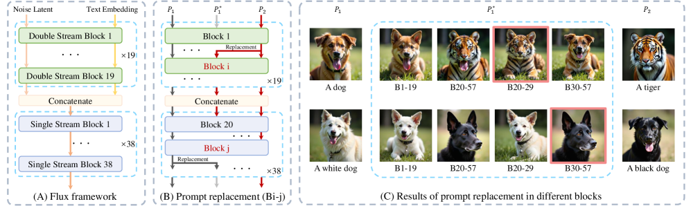
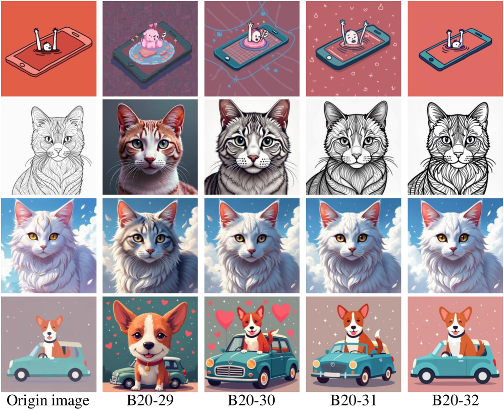
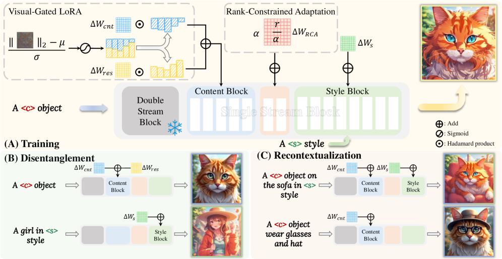
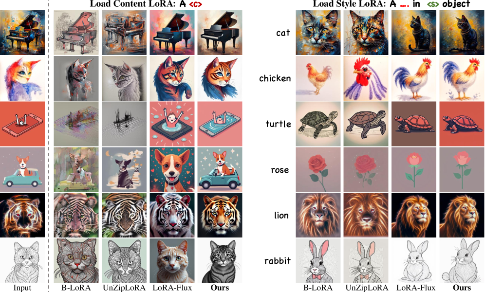
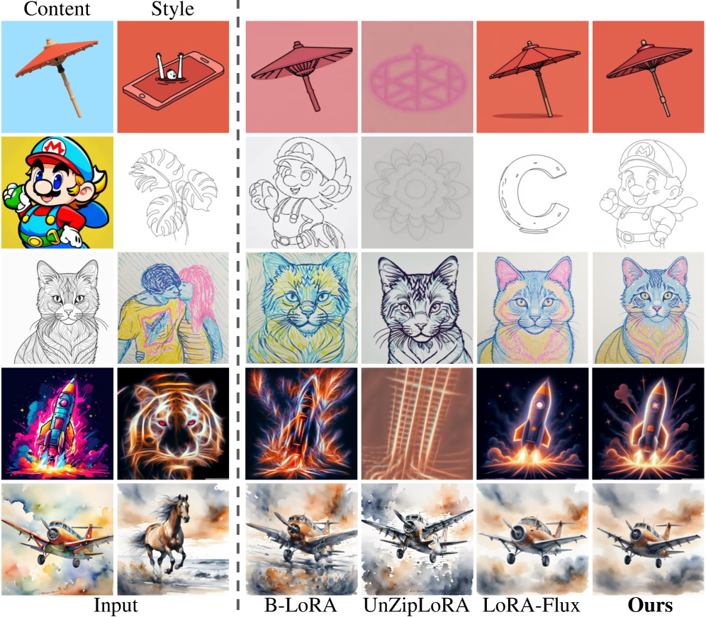
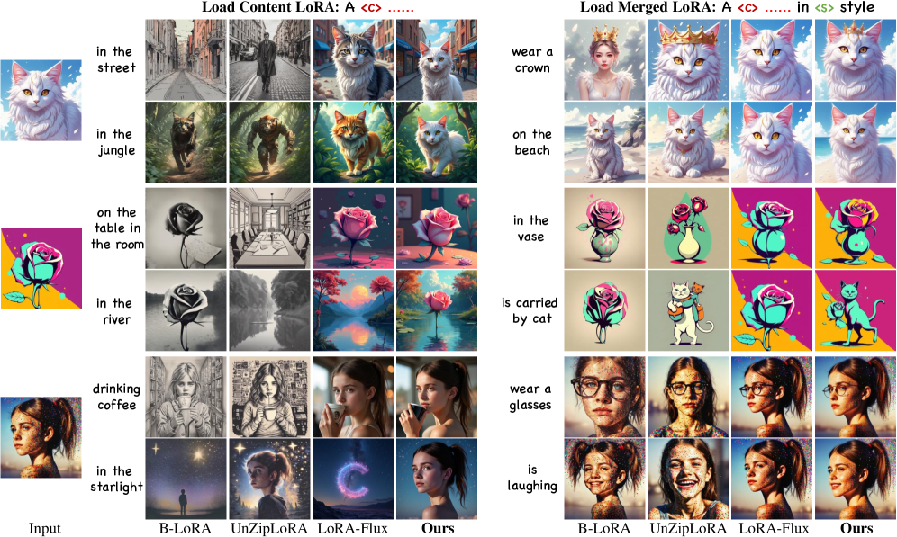
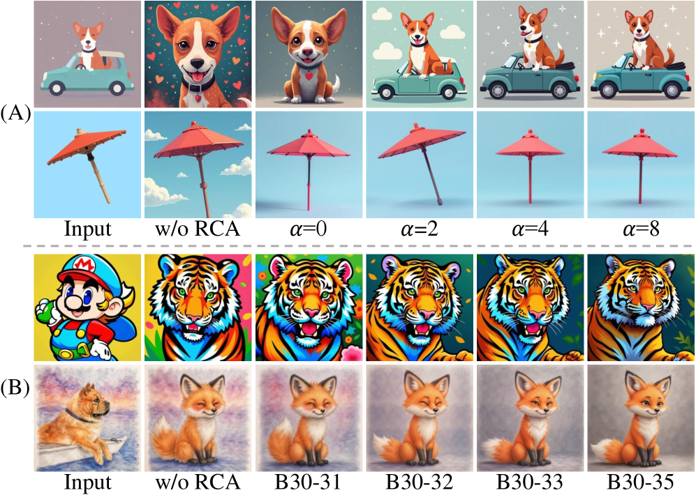
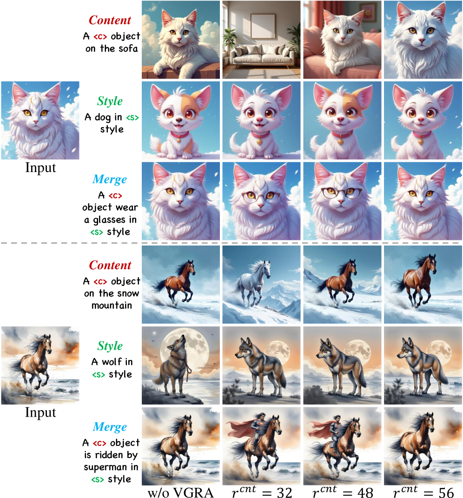

Disentangling image content and style is essential for customized image generation. Existing SDXL-based methods struggle to achieve high-quality results, while the recently proposed Flux model fails to achieve effective content-style separation due to its underexplored characteristics. To address these challenges, we conduct a systematic analysis of Flux and make two key observations: (1) Single Stream Blocks are essential for image generation; and (2) Early single stream blocks mainly control content, whereas later blocks govern style.
Based on these insights, we propose SplitFlux, which disentangles content and style by fine-tuning the single stream blocks via LoRA, enabling the disentangled content to be re-embedded into new contexts. It includes two key components: (1) Rank-Constrained Adaptation — to preserve content identity and structure, we compress the rank and amplify the magnitude of updates within specific blocks, preventing content leakage into style blocks; (2) Visual-Gated LoRA — we split the content LoRA into two branches with different ranks, guided by image saliency. The high-rank branch preserves primary subject information, while the low-rank branch encodes residual details, mitigating content overfitting and enabling seamless re-embedding.
Extensive experiments demonstrate that SplitFlux consistently outperforms state-of-the-art methods, achieving superior content preservation and stylization quality across diverse scenarios.
We probe the Flux architecture by replacing the prompt fed into individual blocks and observing the change in the generated image. This reveals which blocks are essential for image generation and how content and style are spatially distributed across the network.

Figure 1. (A) Flux framework. (B) Prompt-replacement protocol used to test the functional contribution of each block.
Applying a LoRA to a single block at a time shows that early single stream blocks lock in content, while later blocks lock in style — motivating SplitFlux's block-specific design.

Figure 3. Applying block-specific LoRAs reveals that early blocks govern content and later blocks govern style.
Building on the analysis above, SplitFlux trains content and style blocks separately with two paired LoRAs. To prevent content from leaking into style we add Rank-Constrained Adaptation (RCA); to retain subject identity while enabling re-embedding we add Visual-Gated LoRA (VGRA).

Figure 2. Overview of SplitFlux. Content and style blocks are trained with two different prompts; RCA preserves content identity and VGRA enables seamless re-embedding.
Our main contributions can be summarized as:
From a single reference image, SplitFlux separately extracts content and style. The content LoRA generates the same subject in arbitrary new scenes; the style LoRA applies the reference's visual style to arbitrary new subjects.

Figure 4. Qualitative comparison for disentanglement. SplitFlux preserves identity and structure of the disentangled content noticeably better than prior work.
Because content and style LoRAs are trained independently, they can be freely combined: any extracted content can be rendered in any extracted style with high fidelity to both.

Figure 6. Qualitative comparison for Merger. SplitFlux achieves the best combination, maintaining high fidelity in both content and style.
SplitFlux re-embeds the disentangled content into new contexts described by free-form text prompts, preserving subject identity while flexibly varying scene, pose and composition.

Figure 5. Comparison for Recontextualization. SplitFlux flexibly adapts to varying contexts while accurately preserving both subject and style.
We ablate the two key components of SplitFlux. RCA compresses the rank and amplifies the magnitude of LoRA updates in a narrow window of late blocks (we use α = 2, Blocks 30–31). VGRA splits the content LoRA into a high-rank branch (we use rcnt = 48) and a low-rank residual branch.

Figure 7. Ablation on RCA — magnitude scale α and selected blocks.

Figure 8. Ablation on VGRA — content-branch rank rcnt.
@inproceedings{yang2026splitflux,
title = {SplitFlux: Learning to Decouple Content and Style from a Single Image},
author = {Yang, Yitong and Wang, Yinglin and Wang, Changshuo and Zhang, Yongjun and Chen, Ziyang and He, Shuting},
booktitle = {IEEE/CVF Conference on Computer Vision and Pattern Recognition (CVPR)},
year = {2026}
}